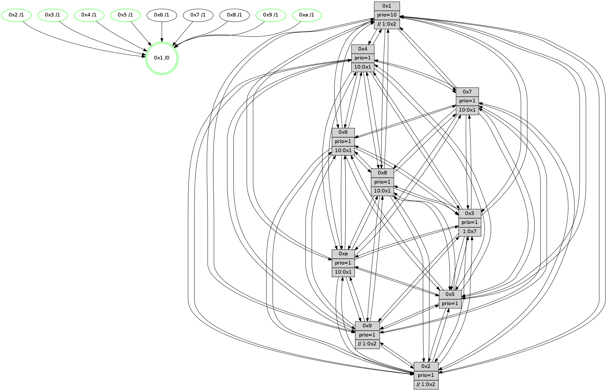

>> << IDX [start] -100 -25 -5 +0 +5 +25 +100 [905.202943087]
 Previous packets
----------------------------------------------------------------------
900.474161 beacon01(faad) #0 coord=01,02,03,04,05,06,07,0a,09,08 cycle=688.0ms assoc
-- color-indic=1 64 c8 5e
900.484143 beacon02(faad) #0 coord=01,02,03,04,05,06,07,0a,09,08 cycle=688.0ms assoc 64 5b 6f
900.494143 beacon03(faad) #0 coord=01,02,03,04,05,06,07,0a,09,08 cycle=688.0ms assoc 64 21 22
900.504143 beacon04(faad) #0 coord=01,02,03,04,05,06,07,0a,09,08 cycle=688.0ms assoc 64 56 c8
900.514145 beacon05(faad) #0 coord=01,02,03,04,05,06,07,0a,09,08 cycle=688.0ms assoc 64 2c 85
900.524145 beacon06(faad) #0 coord=01,02,03,04,05,06,07,0a,09,08 cycle=688.0ms assoc 64 a2 52
900.534145 beacon07(faad) #0 coord=01,02,03,04,05,06,07,0a,09,08 cycle=688.0ms assoc 64 d8 1f
900.544148 beacon0a(faad) #0 coord=01,02,03,04,05,06,07,0a,09,08 cycle=688.0ms assoc 64 a9 14
900.554149 beacon09(faad) #0 coord=01,02,03,04,05,06,07,0a,09,08 cycle=688.0ms assoc 64 27 c3
900.564149 beacon08(faad) #0 coord=01,02,03,04,05,06,07,0a,09,08 cycle=688.0ms assoc 64 5d 8e
900.575552 [Hello(6): seq=576 sym=2,3,5,4,7,9,8,10,1 sysInfo= stat=2:9,4,2,7/3:4,6,10,9/5:5,3,9,12/4:6,14,2,0/7:3,1,6,4/9:4,14,9,2/8:15,3,3,0/10:3,4,15,9/1:10,3,4,1]
900.578399 [STC(6)->1 #0.113 tree-change,inconsistent-stability,to-color d=1]
900.579863 [Color(4) seq=194 @0:0 prio=1 >10.@1,1.@2,1.@3,1.@7]
900.581584 [Hello(5): seq=576 sym=7,6,4,3,1,9,8,10,2 sysInfo=hasWarning stat=7:11,2,12,7/6:1,9,8,9/4:6,9,10,5/3:7,0,2,9/1:9,1,8,1/9:1,1,7,2/8:4,11,4,7/10:3,5,2,3/2:4,10,3,0]
900.584118 [STC(7)->1 #0.113 tree-change,inconsistent-stability,to-color d=1]
900.585698 [STC(5)->1 #0.113 tree-change,inconsistent-stability,stable,to-color d=1]
900.588596 [Color(5) seq=229 @0:0 prio=1]
900.591155 [Hello(1): seq=485 sym=4,2,9,5,10,3,8,6,7 sysInfo=coloring-mode-on,ColoringModeRequestCalled stat=4:4,11,11,0/2:7,5,7,10/9:12,3,8,3/5:2,4,14,4/10:12,3,5,1/3:12,5,4,2/8:0,3,4,0/6:10,8,3,9/7:9,9,9,11]
900.593689 [Hello(2): seq=572 sym=4,5,7,6,3,9,8,10,1 sysInfo=hasWarning stat=4:15,9,1,4/5:1,2,0,0/7:13,2,12,8/6:2,14,6,7/3:6,9,4,5/9:2,13,5,2/8:4,15,2,7/10:1,8,5,8/1:6,15,7,1]
900.597594 [Hello(3): seq=576 sym=1,7,6,2,4,8,9,10,5 sysInfo= stat=1:6,1,14,0/7:5,10,3,6/6:1,2,6,1/2:14,2,7,9/4:9,4,11,5/8:13,1,3,0/9:5,15,6,9/10:5,0,3,1/5:7,14,1,10]
900.601691 [STC(3)->1 #0.113 tree-change,inconsistent-stability,stable,to-color d=1]
900.603359 [STC(2)->1 #0.113 tree-change,inconsistent-stability,stable,to-color d=1]
900.607254 [Color(2) seq=221 @0:0 prio=1 >>1.@2,1.@3,1.@4]
----------------------------------------------------------------------
901.262292 beacon01(faad) #0 coord=01,02,03,04,05,06,07,0a,09,08 cycle=688.0ms assoc
-- color-indic=1 64 74 5b
901.272274 beacon02(faad) #0 coord=01,02,03,04,05,06,07,0a,09,08 cycle=688.0ms assoc 64 e7 6a
901.282274 beacon03(faad) #0 coord=01,02,03,04,05,06,07,0a,09,08 cycle=688.0ms assoc 64 9d 27
901.292275 beacon04(faad) #0 coord=01,02,03,04,05,06,07,0a,09,08 cycle=688.0ms assoc 64 ea cd
901.302274 beacon05(faad) #0 coord=01,02,03,04,05,06,07,0a,09,08 cycle=688.0ms assoc 64 90 80
901.312274 beacon06(faad) #0 coord=01,02,03,04,05,06,07,0a,09,08 cycle=688.0ms assoc 64 1e 57
901.322275 beacon07(faad) #0 coord=01,02,03,04,05,06,07,0a,09,08 cycle=688.0ms assoc 64 64 1a
901.332279 beacon0a(faad) #0 coord=01,02,03,04,05,06,07,0a,09,08 cycle=688.0ms assoc 64 15 11
901.342281 beacon09(faad) #0 coord=01,02,03,04,05,06,07,0a,09,08 cycle=688.0ms assoc 64 9b c6
901.352280 beacon08(faad) #0 coord=01,02,03,04,05,06,07,0a,09,08 cycle=688.0ms assoc 64 e1 8b
901.363459 [Hello(8): seq=520 sym=5,2,3,4,9,6,7,10,1 sysInfo=hasWarning stat=5:9,0,12,11/2:7,11,8,3/3:9,7,8,11/4:15,11,6,6/9:5,5,3,0/6:10,4,4,9/7:2,2,0,0/10:2,3,1,0/1:12,12,5,0]
901.367666 [Hello(9): seq=520 sym=2,5,3,4,7,6,8,10,1 sysInfo=hasWarning stat=2:8,2,9,1/5:8,2,4,2/3:5,0,5,11/4:14,15,2,6/7:13,3,11,8/6:5,4,12,7/8:11,6,12,1/10:4,4,1,0/1:0,8,9,1]
901.370761 [Color(1) seq=257 @0:0 prio=10 >>1.@2,1.@3,1.@4]
901.372773 [Hello(10): seq=509 sym=6,2,3,8,9,5,7,4,1 sysInfo=hasWarning stat=6:7,6,9,3/2:13,11,7,3/3:6,10,3,7/8:3,2,0,0/9:7,5,8,1/5:12,13,11,11/7:14,4,8,5/4:6,15,15,6/1:7,9,10,1]
901.375685 [Hello(7): seq=576 sym=2,3,5,6,4,9,8,10,1 sysInfo=hasWarning stat=2:3,11,4,11/3:2,4,12,11/5:7,11,15,14/6:1,11,11,5/4:11,15,10,0/9:6,7,3,0/8:9,13,3,0/10:6,10,2,1/1:4,0,7,0]
901.378920 [Color(10) seq=197 @0:0 prio=1 >10.@1,1.@2,1.@3,1.@5]
901.381185 [Hello(4): seq=576 sym=5,7,6,2,3,9,8,10,1 sysInfo= stat=5:10,9,8,10/7:3,7,10,5/6:6,0,7,9/2:11,6,3,8/3:1,8,5,7/9:15,10,12,5/8:11,3,10,10/10:3,2,14,8/1:1,1,9,1]
901.385489 [Color(9) seq=225 @0:0 prio=1 >>1.@2,1.@3,1.@4]
----------------------------------------------------------------------
902.050422 beacon01(faad) #0 coord=01,02,03,04,05,06,07,0a,09,08 cycle=688.0ms assoc
-- color-indic=1 64 b0 55
902.060403 beacon02(faad) #0 coord=01,02,03,04,05,06,07,0a,09,08 cycle=688.0ms assoc 64 23 64
902.070404 beacon03(faad) #0 coord=01,02,03,04,05,06,07,0a,09,08 cycle=688.0ms assoc 64 59 29
902.080406 beacon04(faad) #0 coord=01,02,03,04,05,06,07,0a,09,08 cycle=688.0ms assoc 64 2e c3
902.090403 beacon05(faad) #0 coord=01,02,03,04,05,06,07,0a,09,08 cycle=688.0ms assoc 64 54 8e
902.100404 beacon06(faad) #0 coord=01,02,03,04,05,06,07,0a,09,08 cycle=688.0ms assoc 64 da 59
902.110406 beacon07(faad) #0 coord=01,02,03,04,05,06,07,0a,09,08 cycle=688.0ms assoc 64 a0 14
902.120411 beacon0a(faad) #0 coord=01,02,03,04,05,06,07,0a,09,08 cycle=688.0ms assoc 64 d1 1f
902.130409 beacon09(faad) #0 coord=01,02,03,04,05,06,07,0a,09,08 cycle=688.0ms assoc 64 5f c8
902.140409 beacon08(faad) #0 coord=01,02,03,04,05,06,07,0a,09,08 cycle=688.0ms assoc 64 25 85
902.151673 [Hello(1): seq=486 sym=4,2,9,5,10,3,8,6,7 sysInfo=coloring-mode-on,ColoringModeRequestCalled stat=4:5,11,11,0/2:8,6,8,10/9:12,4,8,3/5:2,4,14,4/10:12,4,5,1/3:13,6,5,2/8:1,3,4,0/6:10,8,3,9/7:10,9,9,11]
902.155815 [Color(4) seq=195 @0:0 prio=1 >10.@1,1.@2,1.@3,1.@7]
902.158151 [Hello(5): seq=577 sym=7,6,4,3,1,9,8,10,2 sysInfo=hasWarning stat=7:12,2,12,7/6:2,9,9,9/4:7,9,10,5/3:7,0,3,9/1:10,2,8,1/9:2,2,7,2/8:5,11,5,7/10:4,6,2,3/2:5,11,4,0]
902.161939 [Color(5) seq=230 @0:0 prio=1]
902.163988 [Hello(6): seq=577 sym=2,3,5,4,7,9,8,10,1 sysInfo= stat=2:10,5,3,7/3:4,6,11,9/5:6,4,10,12/4:7,15,2,0/7:4,1,7,4/9:5,15,9,2/8:0,3,4,0/10:4,5,15,9/1:11,4,4,1]
902.174372 [Hello(2): seq=573 sym=4,5,7,6,3,9,8,10,1 sysInfo=hasWarning stat=4:0,9,1,4/5:1,2,0,0/7:14,2,12,8/6:3,14,7,7/3:6,9,4,5/9:3,14,5,2/8:5,15,2,7/10:2,9,5,8/1:6,0,7,1]
902.177213 [Color(2) seq=222 @0:0 prio=1 >>1.@2,1.@3,1.@4]
902.178877 [Hello(3): seq=577 sym=1,7,6,2,4,8,9,10,5 sysInfo= stat=1:6,1,14,0/7:6,10,3,6/6:1,2,6,1/2:14,3,8,9/4:10,4,11,5/8:14,1,3,0/9:5,0,6,9/10:5,1,3,1/5:7,14,1,10]
----------------------------------------------------------------------
902.838552 beacon01(faad) #0 coord=01,02,03,04,05,06,07,0a,09,08 cycle=688.0ms assoc
-- color-indic=1 64 0c 50
902.848534 beacon02(faad) #0 coord=01,02,03,04,05,06,07,0a,09,08 cycle=688.0ms assoc 64 9f 61
902.858535 beacon03(faad) #0 coord=01,02,03,04,05,06,07,0a,09,08 cycle=688.0ms assoc 64 e5 2c
902.868536 beacon04(faad) #0 coord=01,02,03,04,05,06,07,0a,09,08 cycle=688.0ms assoc 64 92 c6
902.878536 beacon05(faad) #0 coord=01,02,03,04,05,06,07,0a,09,08 cycle=688.0ms assoc 64 e8 8b
902.888536 beacon06(faad) #0 coord=01,02,03,04,05,06,07,0a,09,08 cycle=688.0ms assoc 64 66 5c
902.898536 beacon07(faad) #0 coord=01,02,03,04,05,06,07,0a,09,08 cycle=688.0ms assoc 64 1c 11
902.908541 beacon0a(faad) #0 coord=01,02,03,04,05,06,07,0a,09,08 cycle=688.0ms assoc 64 6d 1a
902.918539 beacon09(faad) #0 coord=01,02,03,04,05,06,07,0a,09,08 cycle=688.0ms assoc 64 e3 cd
902.928541 beacon08(faad) #0 coord=01,02,03,04,05,06,07,0a,09,08 cycle=688.0ms assoc 64 99 80
902.940665 [Hello(8): seq=521 sym=5,2,3,4,9,6,7,10,1 sysInfo=hasWarning stat=5:10,1,12,11/2:8,12,8,3/3:10,7,8,11/4:0,12,6,6/9:6,6,3,0/6:11,4,4,9/7:3,2,0,0/10:3,4,1,0/1:13,13,5,0]
902.944340 [Color(3) seq=218 @0:0 prio=1 >1.@7]
902.947206 [Hello(4): seq=577 sym=5,7,6,2,3,9,8,10,1 sysInfo= stat=5:11,10,8,10/7:3,7,10,5/6:7,0,7,9/2:12,7,3,8/3:2,8,5,7/9:15,11,12,5/8:11,3,10,10/10:3,2,14,8/1:2,1,9,1]
902.949606 [Color(1) seq=258 @0:0 prio=10 >>1.@2,1.@3,1.@4]
902.955492 [Hello(10): seq=510 sym=6,2,3,8,9,5,7,4,1 sysInfo=hasWarning stat=6:8,6,9,3/2:14,12,7,3/3:7,10,3,7/8:4,2,0,0/9:7,6,8,1/5:13,14,11,11/7:14,4,8,5/4:7,0,15,6/1:8,9,10,1]
902.958972 [Color(10) seq=198 @0:0 prio=1 >10.@1,1.@2,1.@3,1.@5]
902.960797 [Hello(9): seq=521 sym=2,5,3,4,7,6,8,10,1 sysInfo=hasWarning stat=2:9,3,9,1/5:9,3,4,2/3:6,0,5,11/4:14,0,2,6/7:13,3,11,8/6:6,4,12,7/8:12,6,12,1/10:4,4,1,0/1:1,8,9,1]
902.963641 [Color(9) seq=226 @0:0 prio=1 >>1.@2,1.@3,1.@4]
902.970972 [Hello(7): seq=577 sym=2,3,5,6,4,9,8,10,1 sysInfo=hasWarning stat=2:4,12,4,11/3:3,4,12,11/5:8,12,15,14/6:2,11,11,5/4:12,0,10,0/9:6,8,3,0/8:9,13,3,0/10:6,11,2,1/1:5,0,7,0]
----------------------------------------------------------------------
903.626681 beacon01(faad) #0 coord=01,02,03,04,05,06,07,0a,09,08 cycle=688.0ms assoc
-- color-indic=1 64 38 48
903.636665 beacon02(faad) #0 coord=01,02,03,04,05,06,07,0a,09,08 cycle=688.0ms assoc 64 ab 79
903.646664 beacon03(faad) #0 coord=01,02,03,04,05,06,07,0a,09,08 cycle=688.0ms assoc 64 d1 34
903.656664 beacon04(faad) #0 coord=01,02,03,04,05,06,07,0a,09,08 cycle=688.0ms assoc 64 a6 de
903.666664 beacon05(faad) #0 coord=01,02,03,04,05,06,07,0a,09,08 cycle=688.0ms assoc 64 dc 93
903.676664 beacon06(faad) #0 coord=01,02,03,04,05,06,07,0a,09,08 cycle=688.0ms assoc 64 52 44
903.686665 beacon07(faad) #0 coord=01,02,03,04,05,06,07,0a,09,08 cycle=688.0ms assoc 64 28 09
903.696669 beacon0a(faad) #0 coord=01,02,03,04,05,06,07,0a,09,08 cycle=688.0ms assoc 64 59 02
903.716672 beacon08(faad) #0 coord=01,02,03,04,05,06,07,0a,09,08 cycle=688.0ms assoc 64 ad 98
903.728140 [Hello(6): seq=578 sym=2,3,5,4,7,9,8,10,1 sysInfo= stat=2:11,6,3,7/3:5,7,11,9/5:6,4,10,12/4:8,15,2,0/7:5,1,7,4/9:6,0,9,2/8:1,3,4,0/10:5,6,15,9/1:11,4,4,1]
903.731222 PARSE ERROR************************
Traceback (most recent call last):
File "PacketAnalysis.py", line 167, in showOperaPacket
structPacket = OperaPacketParse.parsePacket(rawPacket)
File "../../pkg-python/HipSens/Core/OperaPacketParse.py", line 461, in parsePacket
return parseHelloMessage(data)
File "../../pkg-python/HipSens/Core/OperaPacketParse.py", line 125, in parseHelloMessage
struct.unpack("!H",linkList[:2])[0])
error: unpack requires a string argument of length 2
48 34 03 00 02 42 00 02 02 12 01 00 07 00 06 00 02 00 04 00 08 00 09 00 0a 00 05 00 53 04 00 00 00 00 4c 12 0e 16 63 a7 16 21 98 3e 5b 4b 03 1f 96 16 13 26 a1 e7 4d 21
903.734230 [Hello(1): seq=487 sym=4,2,9,5,10,3,8,6,7 sysInfo=coloring-mode-on,ColoringModeRequestCalled stat=4:5,12,11,0/2:9,7,8,10/9:13,5,8,3/5:3,5,14,4/10:13,5,5,1/3:14,6,5,2/8:2,3,4,0/6:11,8,3,9/7:11,9,9,11]
903.741724 [Color(5) seq=231 @0:0 prio=1]
903.743103 [Color(2) seq=223 @0:0 prio=1 >>1.@2,1.@3,1.@4]
903.749778 [STC(1) #0.114 tree-change,inconsistent-stability,stable,to-color d=0]
903.753090 [Color(4) seq=196 @0:0 prio=1 >10.@1,1.@2,1.@3,1.@7]
----------------------------------------------------------------------
904.414812 beacon01(faad) #0 coord=01,02,03,04,05,06,07,0a,09,08 cycle=688.0ms assoc
-- color-indic=1 64 84 4d
904.424795 beacon02(faad) #0 coord=01,02,03,04,05,06,07,0a,09,08 cycle=688.0ms assoc 64 17 7c
904.434795 beacon03(faad) #0 coord=01,02,03,04,05,06,07,0a,09,08 cycle=688.0ms assoc 64 6d 31
904.444795 beacon04(faad) #0 coord=01,02,03,04,05,06,07,0a,09,08 cycle=688.0ms assoc 64 1a db
904.454795 beacon05(faad) #0 coord=01,02,03,04,05,06,07,0a,09,08 cycle=688.0ms assoc 64 60 96
904.464796 beacon06(faad) #0 coord=01,02,03,04,05,06,07,0a,09,08 cycle=688.0ms assoc 64 ee 41
904.474794 beacon07(faad) #0 coord=01,02,03,04,05,06,07,0a,09,08 cycle=688.0ms assoc 64 94 0c
904.484800 beacon0a(faad) #0 coord=01,02,03,04,05,06,07,0a,09,08 cycle=688.0ms assoc 64 e5 07
904.504800 beacon08(faad) #0 coord=01,02,03,04,05,06,07,0a,09,08 cycle=688.0ms assoc 64 11 9d
904.516013 [Hello(4): seq=578 sym=5,7,6,2,3,9,8,10,1 sysInfo= stat=5:11,10,8,10/7:4,7,10,5/6:8,0,7,9/2:12,7,3,8/3:2,8,5,7/9:0,12,12,5/8:11,3,10,10/10:4,3,14,8/1:2,2,9,1]
904.518445 [Hello(7): seq=578 sym=2,3,5,6,4,9,8,10,1 sysInfo=hasWarning stat=2:5,13,4,11/3:4,4,12,11/5:8,13,15,14/6:3,11,11,5/4:12,1,10,0/9:6,8,3,0/8:9,13,3,0/10:6,11,2,1/1:6,0,8,0]
904.521277 [STC(3)->1 #0.114 tree-change,inconsistent-stability,stable,to-color d=1]
904.525413 [Hello(10): seq=511 sym=6,2,3,8,9,5,7,4,1 sysInfo=hasWarning stat=6:9,6,9,3/2:15,13,7,3/3:8,10,3,7/8:5,2,0,0/9:8,7,8,1/5:13,15,11,11/7:15,4,8,5/4:7,1,15,6/1:9,9,11,1]
904.532850 [STC(10)->1 #0.114 tree-change,inconsistent-stability,stable,to-color d=1]
904.534206 [STC(5)->1 #0.114 tree-change,inconsistent-stability,stable,to-color d=1]
904.536511 [STC(7)->1 #0.114 tree-change,inconsistent-stability,to-color d=1]
904.539248 [Color(10) seq=199 @0:0 prio=1 >10.@1,1.@2,1.@3,1.@5]
904.541717 [STC(9)->1 #0.114 tree-change,inconsistent-stability,stable,to-color d=1]
904.544004 [TreeStatus(9)-.->1 #0.114 tree-change,inconsistent-stability,stable child=1]
904.545385 [Color(3) seq=219 @0:0 prio=1 >1.@7]
904.546786 [Color(9) seq=227 @0:0 prio=1 >>1.@2,1.@3,1.@4]
904.551176 [STC(8)->1 #0.114 tree-change,inconsistent-stability,to-color d=1]